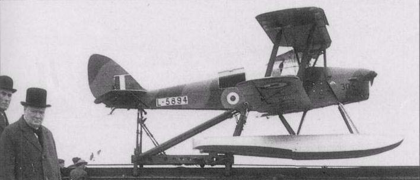
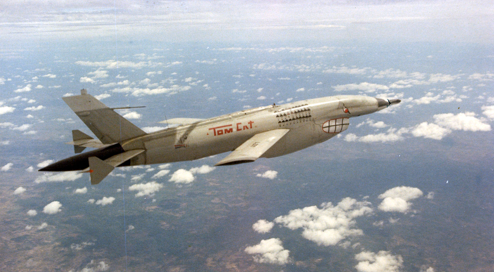

A Brief History of Drones

Figure 2. The US-made Kettering Bug.
The First Drone
When talking about UAVs, many believe that they are recent innovations from the beginning of the 2000s, but only a few know that there is a not-so-short history of UAVs that dates back more than 100 years ago. Throughout history, humans have launched all manner of objects into the sky above, but some of the first attempts at doing so in a controlled manner happened in World War I.
In 1917, Charles Kettering invented the first unmanned airplane carrying explosives nicknamed “Bug”, marking the First Drone Age. Hoping to change the tide of the war through aerial bombardment, the US Army intended to use the Kettering Bugs as unmanned aerial torpedoes, or what we nowadays call "guided missiles”. However, the Kettering Bugs never went into actual combat.
The Development Of Drones After WW1
Figure 3. The British-made DH82 Queen Bee.
After the Treaty of Versailles, which marked the end of The First World War, many militaries around the globe would continue experimenting with UAVs. Leading the charge, the US Air Force and the Royal Air Force began experiments in making radio-guided UAVs, which became essential in training the next generation of anti-aircraft gunners and pilots.
Figure 3. The Ryan Model 147 "Firebee".
The Use of Drones in Cold War
By the Cold War, the desire to use UAVs to conduct reconnaissance missions had increased dramatically. During the Vietnam War, American drones, such as the Ryan Model 147 "Firebee", were used for reconnaissance missions and as decoys to divert North Vietnamese anti-aircraft fire away from US-manned military aircraft. It is estimated that drones have carried out approximately 3000 missions during the Vietnam War (Axe, 2021).